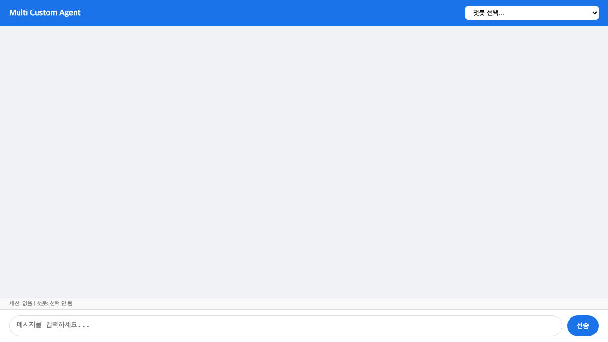
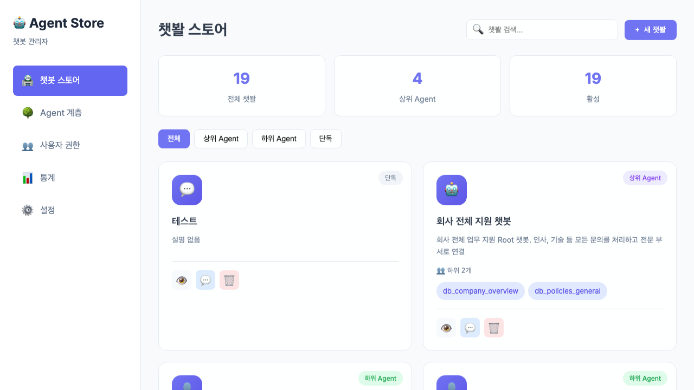

개발자와 직원들이 매일 겪는 반복적인 기술 문제가 있습니다. 비슷한 질문이 계속 들어오고, 담당자는 같은 답변을 반복하느라 시간을 낭비합니다.
"VPN 연결이 안 돼요" → "IT지원팀에 문의하세요"
"이 오류 코드 어떻게 해결하나요?" → "개발팀 Wiki를 찾아보세요"
"서버 배포 권한 어디서 요청하나요?" → "DevOps팀에 슬랙으로 물어보세요"
각 기술 분야의 전문가 챗봇을 만들고, 중앙 지원 챗봇이 문제를 이해해서 적절한 전문 챗봇으로 연결해줍니다. 개발자와 직원들은 어디에 문의해야 할지 몰라도 괜찮습니다.
오류 메시지나 요청 내용을 이해해서 해당 기술 영역의 챗봇을 자동으로 연결합니다. 사용자가 어느 팀에 문의해야 할지 몰라도 됩니다.
늦은 밤이나 주말에도 챗봇이 즉시 응답합니다. 담당자가 부재중일 때도 기본적인 문제 해결과 가이드를 제공합니다.
회사의 기술 문서, Runbook, FAQ를 학습해서 정확한 답변을 찾아줍니다. 방대한 위키를 일일이 뒤질 필요가 없습니다.
어떤 문제가 많이 발생하는지, 어떤 가이드가 부족한지 확인합니다. 선제적으로 문서를 보완하고 교육을 진행할 수 있습니다.
쉽게 설명하면 "IT 지원 데스크의 똑똑한 비서"와 같습니다.
여러 기술 영역이 얽힌 문제라면, 관련된 모든 챗봇이 협력해서 종합적인 해결책을 제공합니다. 사용자는 여러 팀에 따로 문의할 필요가 없습니다.


| 활용 사례 | 설명 |
|---|---|
| 개발 환경 지원 | VPN, 계정 생성, IDE 설치 등 개발자들이 자주 묻는 환경 문제를 한 곳에서 처리. IT지원 챗봇이 바로 해결책을 제공합니다. |
| 기술 전문 상담 | 인프라, 보안, 백엔드, 프론트엔드 등 분야별 전문 챗봇으로 기술 문제 해결을 자동화합니다. |
| 운영 장애 대응 | 오류 코드, 알림 메시지, 장애 상황별 대응 방법을 즉시 안내. 심각한 문제는 적절한 담당자에게 자동으로 연결합니다. |
| 보안 관리 | 서버 접근 권한, 민감한 설정 정보 등은 권한이 있는 사용자만 확인할 수 있도록 안전하게 관리합니다. |
큰 변화 없이 단계적으로 시작할 수 있습니다.